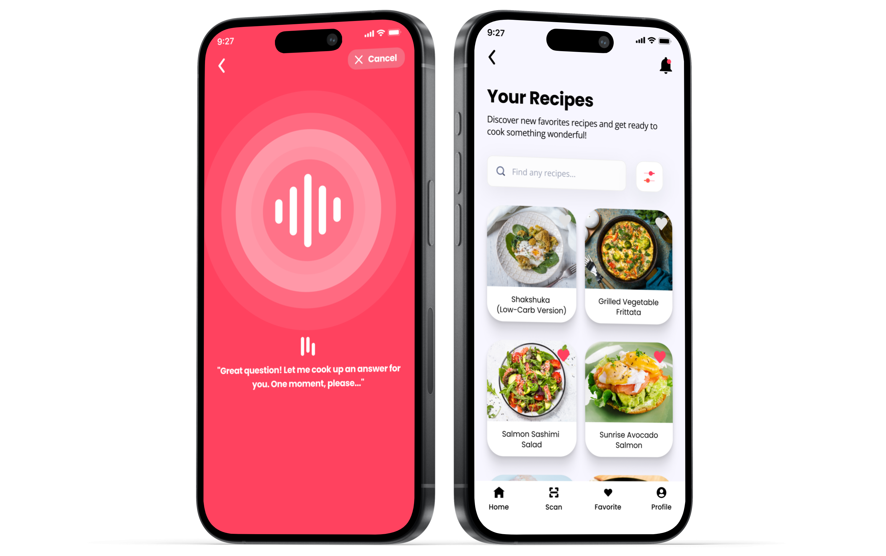
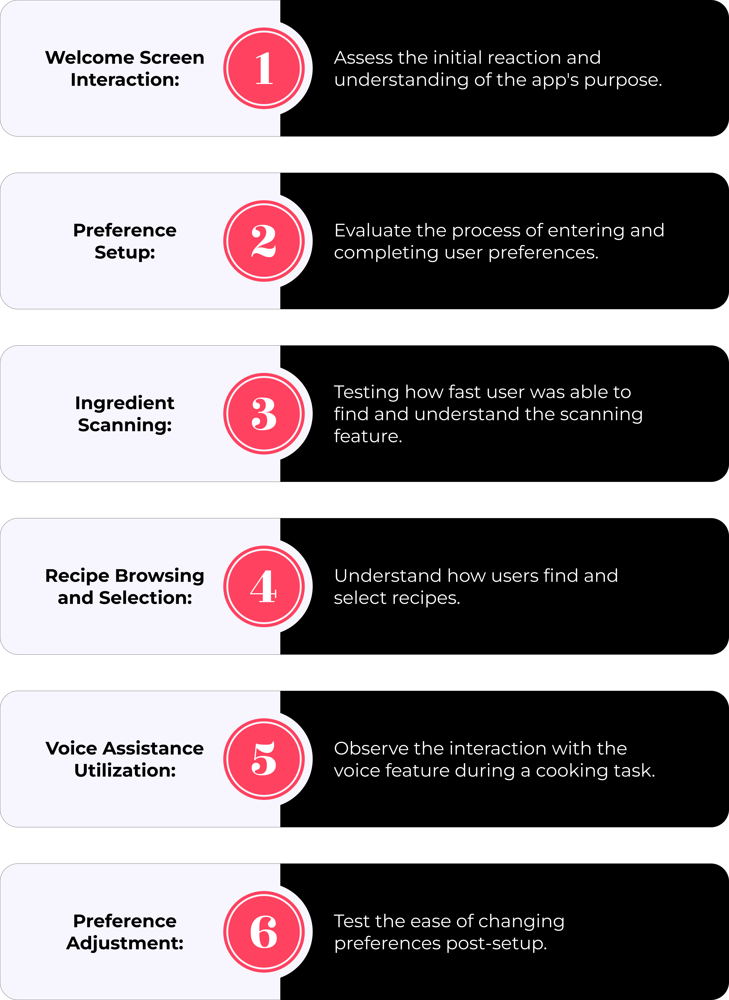
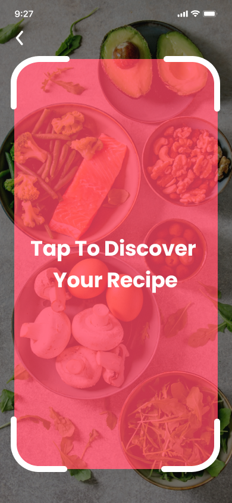

HomeChef
App Design
Role
UX/UI Designer
Date
June 2023
Scroll Down

OVERVIEW
You're in the kitchen, surrounded by a spread of ingredients, but you're tired of the same old recipes
and frustrated with messy, hands-on cooking apps. That's where our app steps in, born from the
desire to transform kitchen chaos into culinary excellence.
Our app is your personal sous-chef
, designed to inspire and assist. It offers personalized recipes that cater to your
unique tastes, a voice assistance feature providing step-by-step instructions without the need to
pause and clean your hands to swipe on your phone, and a smart ingredients scanner turning random
ingredients into a feast by recommending recipes based on what you already have.
This isn't just an app,
it's a revolution in your kitchen, turning everyday cooking into a tailored, hands-free, and creative
adventure. Welcome to a new era of personalized, stress-free, and inspired cooking. Welcome to the future
of your kitchen.

RESEARCH
PLAN
To fully grasp the needs and preferences of our potential user base, we implemented several strategies, including the development of proto-persona, interviews, affinity diagram, and user-personas. Each approach was critical in analyzing the user experience, providing clarity on their needs, preferences, and the challenges they encounter.
01. Proto Persona
We began the design process by creating proto-personas to identify potential user needs, setting the initial direction for user research. This helped in shaping HomeChef to meet these anticipated expectations.
02. Interview Plan
After creating a proto-persona, we moved on to the interview plan to gather authentic insights from real users. This stage helped adjust our initial assumptions, confirming that the design choices were indeed based on actual user needs and experiences.
03. Affinity Diagram
After conducting user interviews, we utilized an affinity diagram to organize and analyze the data collected. This method allows us to group information based on relationships, which helped identify common themes and insights, and ultimately, informing more empathetic and user-centered design choices. It was a vital step to ensure the design is rooted in a deep understanding of the user’s needs and preferences.
03. User Persona
Based on the affinity diagram we created a user personas to build a clear and detailed representation of different user types based on the patterns and commonalities identified earlier. This step aids in keeping the user's needs and preferences central to the design process, facilitating a design that is both intuitive and tailored to the target audience.
IDEATION
PROCESS
After completing the "Research Plan," we moved on to the "Ideation Process" stage. Here, we developed storyboards to capture the specific preferences and needs of our user personas, leading to innovative solutions that align with our users' requirements. Additionally, the team worked collaboratively on user-journey maps and user flows to further visualize potential interactions with the app.
01. Storyboard
This visual storytelling approach helped bridge gaps in our initial understanding and transformed insights into actionable, user-centered design features. This helped identify key features and pain points, facilitated team understanding and alignment, and guided the development focus to enhance the user experience.

03. User Journey Map
We created a user journey map to visualize each step of the user's experience with our app. This step allowed us to identify potential issues and areas for improvement by focusing on the users’ needs and experiences at every interaction point, guiding us to design solutions that are both intuitive interface.
04. User Flow
After the user journey map, we designed a user flow to detail the potential pathways within our app. This process, more detailed than the journey map, plots the step-by-step routes users might take to accomplish tasks, enhancing the usability by ensuring intuitive and straightforward navigation that effectively avoids user frustration.
TESTING
AND
ITERATION
After outlining the basic user journey through a user-flow, we began crafting
low-fidelity wireframes and conducted our first usability testing to establish the
essential structure and features. This initial stage set a solid foundation for the subsequent development of
mid-fidelity wireframes, which provided a clearer and more detailed visual representation of the
user interface.
With the mid-fidelity wireframes as a guide, we then created a
mid-fidelity clickable prototype enabling us to conduct thorough
second usability testing. This testing was pivotal in ensuring our designs aligned with user
expectations and needs.
The feedback from these usability tests was invaluable. It informed the necessary
refinements and enhancements, leading us to develop a high-fidelity clickable prototype.
This new prototype embodied an enhanced UI design that was both user-centric and intuitive, encapsulating the
insights and improvements identified through our iterative and user-focused design process.
01. Low-Fidelity Wireframes (Sketches)
Following the user flow, we created wireframe sketches to provide a basic, visual representation of the app's layout, helping to establish the structure and navigation before diving into detailed design.

02. First Usability Testing (Low-Fidelity Wireframes)
This step was crucial to identifying any usability issues and understanding user preferences to refine the design at the early stage before moving to the development of the mid-fidelity and high-fidelity prototype.


04. Iteration Process
Following our analysis, we began the iteration process, systematically implementing changes based on this analysis. These were some crucial changes we decided to make to HomeChef.
Iteration 1:
Based on the usability testing 65% of the participants wanted a more welcoming gesture before and afer the preferences questions. Hence we've integrated three additional screens into our app.
1. Initially, users are greeted with a "Welcome" screen, providing a warm introduction before they embark on setting up their preferences.
2. After completing the setup, an "Are You Ready?" screen appears, offering a moment of reflection and preparation before proceeding.
3. Finally, a thoughtful loading screen transitions to home users smoothly to the homepage after selecting "Explore" on the "Are You Ready" screen.
Iteration 2:
Recognizing that 60% of participants called for greater clarity during the preferences setup process, we've responded by introducing a numerical progress indicator. This tool clearly shows the number of questions completed and how many are left, keeping users informed every step of the way.
Before
After


Iteration 3:
Usability testing revealed that participants desired a more comprehensive preferences setup, with 70% advocating for the inclusion of meal type (breakfast, lunch, dinner, snacks), cooking duration, and serving size. To accommodate these needs and further tailor the app experience, we've added two screens specifically focused on these aspects.
Iteration 4:
From our usability testing, a significant 65% of participants expressed the desire for ongoing flexibility in their preferences setup. They want the ability to adjust their answers even after initial completion. Hence, we've decided to incorporate a feature within the profile screen that allows users to modify their preferences at any time.
Before
After
05. Iterated Wirframes (Mid-Fidelity)
After iterating, our team transitioned from low-fidelity sketches to mid-fidelity wireframes. This progression refines our initial concepts into more detailed designs, ensuring a smoother user experience and a clearer visual direction for HomeChef.



06. Mid-Fidelity Clickable Prototype
After refining our mid-fidelity wireframes, our team advanced to a mid-fidelity clickable prototype. This enhancement brings interactivity to our designs, allowing for a more tangible and user-engaging experience, further smoothing out the user journey in HomeChef.
07. Usability Testing (Mid-Fidelity Clickable Prototype)
Following the development of our mid-fidelity clickable prototype, we're initiating another round of usability testing to assess the design and functionality. By using the same tasks, we aim to identify enhancements and further refine the HomeChef user experience.


08. Second Iteration Process
Building on this, we conducted another iteration process informed by the usability testing results, aiming to continuously refine and enhance the HomeChef experience.
Iteration 1:
55% of participants suggested combining cooking duration and serving amount to simplify the setup process. This adjustment aims to reduce the time and cognitive effort users need to begin their cooking journey, making the initial steps quicker and more intuitive.
Iteration 2:
With 72% of users in favor, introducing confirmation screens for ingredients is a widely supported improvement. This feature allows users to verify and adjust their ingredients after scanning, ensuring accuracy and providing an essential opportunity for manual corrections.
Iteration 3:
Half of the participants, or 50%, recommended a guide that activates for new users after selecting "Let's Cook!". Whether as a step-by-step overlay or an interactive tutorial, this guide is designed to navigate users through the cooking process, ensuring a smoother and more informed experience.
Iteration 4:
Supported by 66% of participants, the addition of a processing indicator for voice commands is a popular suggestion. This feature is intended to inform users when their input is being processed, effectively reducing repeated commands and decreasing both the time taken and the error rate for a more efficient cooking experience.
HOMECHEF
MOCKUP
FINAL
THOUGHTS
Reflecting on our journey with HomeChef, we're truly satisfied with the progress and the valuable lessons
learned through a thorough UX/UI design process. HomeChef stands as a symbol of our commitment to
a user-centered approach, where every phase was carefully planned and executed to prioritize the
needs and preferences of our users.
Looking forward, we're excited to enhance the personalization features of the app and
integrate more sophisticated AI capabilities to make the culinary experience even more intuitive.
We also plan to improve usability by introducing interactive and social features,
creating a community of cooking enthusiasts.
Additionally, expanding our testing to a wider audience will provide more comprehensive
feedback, crucial for refining and perfecting HomeChef. Our vision is clear: to establish HomeChef
as the premier choice for a personalized, enjoyable, and effortless cooking experience, bringing
joy and creativity to kitchens around the globe. We are eager to continue the evolution of HomeChef and to see
how it will continue to enhance the cooking experiences of our users.
More Works